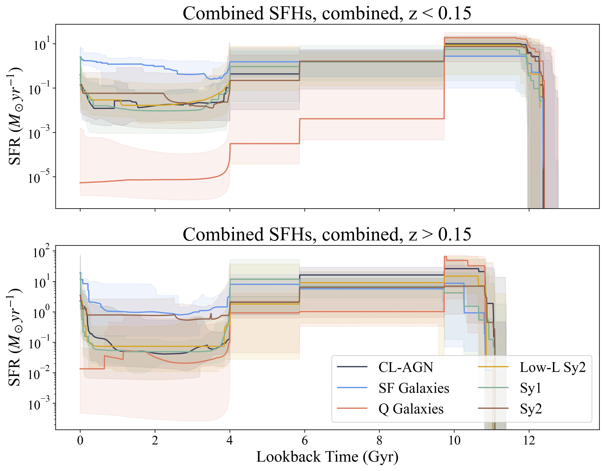
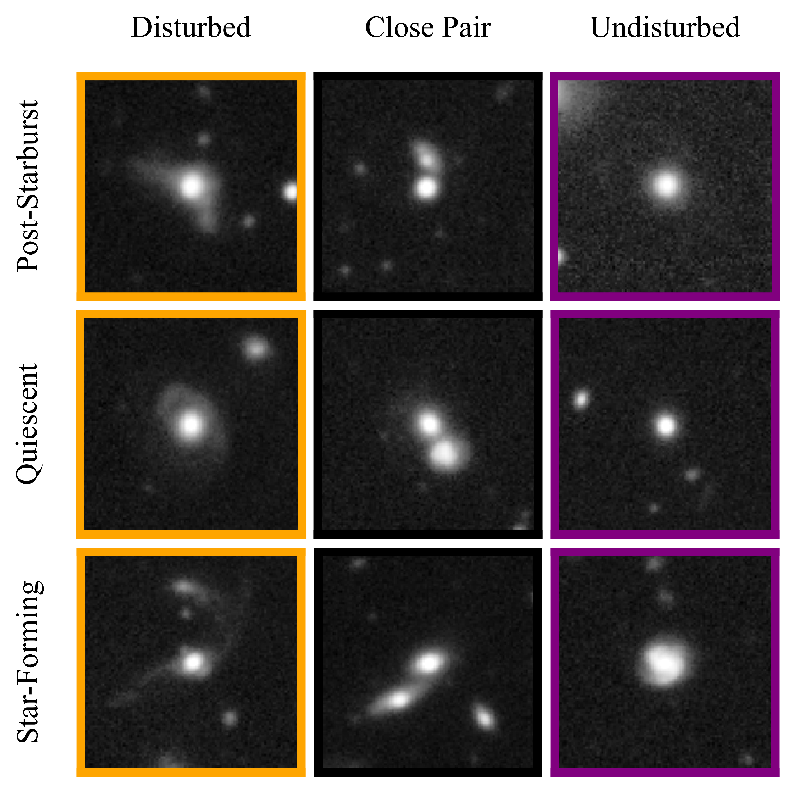

Identifying Transitions in Changing-look Active Galactic Nuclei in Light-curve Data with the Zwicky Transient Facility (ApJ, 2026)
Changing-look AGN are AGN which gain or lose broad emission lines in their spectra on timescales less than a decade. The exact timescale of this transition is extremely constraining for physical models of AGN accretion state changes, but accurately measuring this timescale requires high-cadence spectroscopic monitoring of large numbers of AGN. In this work, I propose a method to identify a photometric counterpart to the spectroscopic CL-AGN transition. Using light curve data from the Zwicky Transient Facility, I identify significant photometric changes in 5 previously-known CL-AGN. For one object, the photometric change is associated with a new CL-AGN transition, meaning this object is a "repeating" CL-AGN. I use the ZTF data to measure CL-AGN transition timescales and find most occur on timescales of years, not decades. I then explore the possible mechanisms to create such rapid transitions.

Modeling Star Formation Histories of Changing-look AGN Host Galaxies with Prospector (ApJ, 2025)
Changing-look active galactic nuclei, or CL-AGN, are AGN which appear to transition between Seyfert Type 1 and 2 over periods of months to years. Several mechanisms to trigger these transitions have been proposed, but we have yet to conclusively determine their cause. Recent studies suggest CL-AGN are hosted primarily in galaxies which are shutting down star formation, which may indicate a link between galaxy quenching and changing look events. In this paper, I model the star formation histories for 39 CL-AGN host galaxies to test whether CL-AGN live in unique host galaxies. I find that CL-AGN hosts have similar star formation properties to the host galaxies of other AGN, implying CL-AGN state transitions may instead result from nuclear-scale or accretion disk effects.

Merger Signatures are Common, but not Universal, in Massive, Recently Quenched Galaxies at z~0.7 (ApJ, 2023)
Post-starburst galaxies are galaxies that have recently and rapidly stopped forming stars. Galaxy mergers are commonly invoked as a way to induce a rapid starburst, change the shape of a galaxy from spiral to elliptical, and deplete or remove gas in the galaxy, forming a post-starburst. In this work, I visually classify tidal features and asymmetries in post-starburst galaxies as tracers of recent mergers. I find that post-starbursts are about 3.6x more likely to be disturbed than quiescent galaxies and about 2.1x more likely to be disturbed than star-forming galaxies, with the highest merger rates occurring in the brightest and most recently quenched post-starbursts. This work suggests a link between galaxy mergers and the post-starburst phase at intermediate redshift.